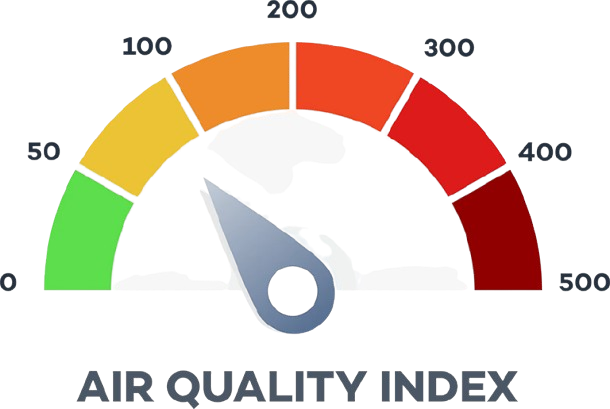

Our Sustainable Future
Our Sustainable Future
|
Our Sustainable Future
|
Water Conservation Energy Conservation Waste Management Air Quality Management |
The world we live in is a shared resource, and it's our responsibility to protect it for future generations. This project aims to educate and inspire others to adopt sustainable practices in their daily lives. By making small, conscious changes, we can collectively make a significant positive impact on our environment, our communities, and our planet's health. This guide will provide a framework for a comprehensive Social Studies project on this vital topic.
Before we can share sustainable practices, we must understand why they are so important. Sustainability is the practice of meeting our own needs without compromising the ability of future generations to meet their own needs. It's about balancing environmental, social, and economic factors.
There are some of the most impactful sustainable practices:-
| Water Conservation | Energy Conservation | Waste Management |  Air Quality Management |